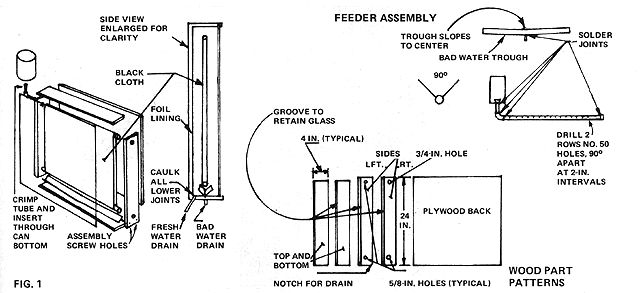

©1959 by D.S. Halacy, Jr., and originally published by the Macmillan Company as a chapter of the book, Fun With
The Sun. Reprinted by permission of the author.
Ninety years ago, mine owners in the high country of Chile were faced with the problem of providing drinking water for their workers. The only available supply was unfit to drink, and so a means of purifying the liquid had to be found. Amazingly, the solution was a sun-operated distilling plant in which a large area of glassed-over wooden frames evaporated the contaminated water, recondensed it . . . and thus produced as much as 6,000 gallons of fresh water in a day!
This solar still used no fuel or power except that from the sun's rays and was thus able to provide pure water at a cost unmatched by any other means of distillation. Oddly, the method was forgotten in the intervening years and fueloperated stills were used whenever it was necessary to convert salty-or otherwise undrinkable water-to fresh.
Not until World War II were solar stills used again except by experimenters. Fliers forced down at sea needed a source of supply of drinking water until they could be rescued. Dr. Maria Telkes developed an inexpensive, lightweight plastic still that could be included in even one-man life rafts and that would produce a quart of fresh water a day.
Since that time Dr. Telkes and other scientists have worked with solar stills of various sizes. Our government's Department of the Interior is interested in the idea, and plans have been made for large seacoast installations to purify salt water for drinking and irrigation. In some designs no pumps would re needed because the sea itself would fill the condensing tanks at high tide.
At present it is felt that the cost of such a system would be too high, even considering that cost of operation would be less than that of a fuel-run still. Engineers are hopeful, however, that improved methods and materials will make the plan feasible.
The principle of the solar still is a simple one, and is observed on a grand scale in nature. Clouds are droplets of water evaporated from the surface of the sea or from damp ground and then condensed high in the air. In the process of evaporation, solids such as salt are left behind. Many readers will be familiar with the commercial harvesting of salt in shallow ponds, for this is one of the oldest of man's uses of solar energy.
The still described here uses the same principle, but is a little more complex than simply letting sea water run into a pond to evaporate. By means of a glass-plate collector we will increase the temperature in the still to speed evaporation. The design is borrowed from Dr. Telkes, and has been proved by careful testing over a long period of time. Researchers have shown that it's possible to produce almost a quart and a half of water a day for each square foot of the collector's surface. Thus the unit should have a maximum output of more than one gallon a day. Of course, this figure represents ideal conditions, but it will be interesting to compare your results with the calculated output. The still described here was tested in mid-winter, and produced more than one quart in six hours.
1 by-4-inch redwood board (8 linear feet)
1/2-inch plywood (one piece, 24 by 24 inches)
Single-weight window glass (one piece, cut to measure)
1/2-inch O.D. copper tubing (4-1/2 feet)
1/2-inch, 90-degree copper elbow (one)
1/2-inch copper pipe cap (one)
Galvanized iron (one piece, 3 by 24 inches)
1/4-inch I.D. copper tube (six inches)
Large tin can (one)
1 /4-by-1-1/2-inch wood screws (approximately 30)
Black terry cloth (approximately two yards . . . one large bath towel)
To begin construction, first assemble all the needed materials (except the glass). Redwood is preferred where possible because it resists rotting, while other woods will deteriorate with constant exposure to water.
At the lumberyard where you buy the 8-foot board (1 by 4 inches) have a groove cut 1/8 inch wide to a depth of 3/8 inch. Locate the cut 1/2 inch from one edge. This is the slot for the glass window. Next cut the 1-by-4 redwood sidepieces to the proper length as shown in Fig. 1.
Drill two holes at each corner of the sidepieces and assemble them with wood screws. The 1/2-inch plywood back may now be put in place and holes drilled for screws. Notice that no screws are put in at the corners, to prevent interference with those which hold the sides together.
Mark the locations for the large holes that will receive the 1/2-inch tubing. Drill a 1/8-inch hole as a guide, and then drill three 5/8inch holes and one 3/4-inch hole, as shown. Be sure the large hole is the proper size for the cap, which we'll solder to the end of the top tube.
The two drain holes-both 1/4 inch in diameter-can now be drilled. One is located in the center of the bottom 1-by-4; the other is in the side 1-by-4, positioned at the vee formed by the bottom and plywood back. Study the drawing to be sure of locating this hole properly. The side drain can now be inserted.
This is a good time to caulk the joints at the bottom and sides and apply several coats of sealer to the inside of the collector box . . . to make it watertight, and so that the distilled water will run out the drain tube and not seep through the bottom of the box. Allow to dry thoroughly and check for leaks.
We know that any surface receiving heat will reradiate part of that warmth. To prevent as much heat loss as possible, and also to present a smooth surface for condensation of water vapor, we'll line the inside of the box with aluminum foil. Running the foil in one piece across the plywood back and the bottom 1-by-4 will make an additional waterproof layer to help proper drainage. Notice that the foil extends into the bottom glass slot also.
A single piece of foil 24 inches wide will do the job. If you find it necessary to use narrower foil, apply the section toward the drain tube first and lap the other piece over it. Use glue, rubber cement or airplane dope to apply the covering. Start at the top, carefully unrolling the foil for a smooth job. Let its edge extend a quarter inch past the edge of the glass slot. This excess will be forced into the slot later when the glass is slid into place. Next line the inside surface of the other three 1-by-4's to complete the job.
Since some salty or otherwise undesirable water may not be evaporated before it reaches the bottom of the black towel wick, we provide a vee-shaped trough to catch this waste and prevent it from mixing with the distilled water at the bottom of the still. Made from galvanized iron, this 24-inch trough is a 90-degree angle with legs 1-1/2 inches wide. This can best be bent at the sheet metal shop.
Drill a hole in the very center of the angle, as shown in Fig. 1, to receive the center 1/4-inch copper drain tube. Put the short length of tubing in place and solder securely. To keep the waste water from spilling out the ends of the trough, curve it slightly by "crimping" its edges in several places.
Once the drain trough is completed it may be put in place by inserting the copper tube in the hole drilled for it. This should be a snug fit. Carefully punch through the aluminum foil first with a pencil, then press the trough down until it just touches the foil at the center.
We're now ready to start on the still's "wick". The 1/2-inch tubing used at the top and bottom to support the toweling is cut to size with a tubing cutter or fine hacksaw. Or give your hardware dealer accurate dimensions and ask him to do this for you.
In addition to holding the toweling in place, the top tube is the distributor for the water supply. To accomplish this we drill two rows of No. 50 holes, at right angles to each other. The holes do not go through both walls of the tubing and are spaced approximately 2 inches apart.
Our still uses a quart can as a reservoir. Cut the top from a large juice container and remove the paper. Next, cut a 4-inch length of 1/2-inch copper tubing and flatten one end in a vise or with a hammer. This tube will serve to meter the water into the long tube so that too much isn't fed to the toweling.
With a chisel, carefully cut a slit in the center of the reservoir's bottom. Allow the metal to bend inward slightly, and check the size of the slit until the flattened tube fits snugly with about 1/2 inch extending inside the can. Make sure the tube remains lined up while you solder it in place.
Now solder the cap onto the other end of the drilled top tube. Push the tube through the holes in the box, taking care not to tear the aluminum foil lining. Prop up the box so that it's tilted back about 45 degrees from the vertical and rotate the tube so that the two rows of holes are properly positioned to feed water into the toweling when it's looped around the tube. The tilt of our still will vary with the position of the sun, so we're striking a happy medium in locating these holes.
With the tube in the right position, force the end cap into the 3/4-inch hole. This should be a snug fit and hold the assembly in the proper place. Now solder the 1/2-inch elbow to the open end of the tube so that it points straight up. The free end of the tube soldered to the can is inserted in the elbow and soldered in place. Some water in the bottom of the can will prevent the joint at the can from melting while you work on the elbow.
Next attach a hinged 1-by-4 prop to the back of the box, using small wood screws as required. This supports the still and also gives us a means of adjusting the tilt to best face the sun. At this time also nail on the two legs, making sure to leave the proper one about 1/4-inch long so that water will run toward the fresh water drain.
Smooth the ends of the bottom tube that will support the toweling and insert it in place . . . and you're ready to sew the toweling together. The still in our plans uses a towel 24 inches wide, with the ends lapped and sewed in two places (along both edges of the lap) to make a loop. In measuring for this, make the loop slightly smaller than the distance between the tubes, because the towel will stretch somewhat when wet. Too much sag would cause it to touch the back of the box and thus contaminate the distilled water.
With the towel sewed together and dampened, slip the 1/2-inch tubes halfway out and start the towel loop onto the supports inside the box (see Fig. 2). The bottom tube is slid back into place first, then the top one is carefully raised into position and forced back into the 3/4-inch hole. Adjust the towel so that it covers the entire length of the tubes and is smooth. Do not let it touch the sides of the box.
At this point, remove the top 1-by-4 piece so that the dimensions for the box's glass front can be taken. Slide a heavy piece of cardboard into the grooves and trim it to fit. Then have your supplier cut a pane of glass to the size of the pattern. The grade of window glass known as "water-white" allows more of the sun's rays to pass than an ordinary pane does and is therefore more efficient for our purpose. However, if it's not available, standard single-strength glass will do.
Slide the glass into position. Make sure it's as clean as it can be . . . particularly on the inner surface, which will not be easy to reach when the still is assembled. Detergents may interfere with proper forming of droplets on the glass, so use plain water for cleansing.
Handle the glass very carefully to avoid cutting yourself on its sharp edges. With the still at a 45-degree angle, start the glass into the slots and ease it downward. When it contacts the aluminum foil at the bottom groove the glass should force the foil neatly into place. Replace the top piece of wood, tighten the screws and the still is ready for operation.
Distillation is easy with our solar plant. First, orient the unit so that the- sun's rays strike it as close to a right angle as possible. Mount the still on a level surface so that the uneven legs will give it the proper slant for draining. If the reservoir can is not vertical, carefully twist the container until it is. The towel should be snug enough to hold it, and the force fit of the end cap in the 3/4-inch hole also helps in this respect.
Now fill the reservoir, and to make sure that the still really works, add some salt to the water! After a few minutes the towel will begin to receive the liquid from the distribution tube. If it doesn't, or if the flow is too slow, very carefully open up the flattened tube in the bottom of the can with the point of an ice pick. Be cautious about this, however, as we don't want the water to flow into the towel faster than it can be evaporated.
Heat from the sun is trapped in the box, and the black towel absorbs this. Water is therefore evaporated from the towel much faster than it would be normally. The vapor, free of all solids, recondenses on the smooth surface of the glass and the foil on the back and sides. You'll see this a few minutes after you put in the water; first the glass steams up, then droplets form and run down to the bottom.
Don't expect the water to gush from the still like a Niagara, but put a can or bottle under the drain to catch the distilled fluid. On a sunny day the still will begin producing soon after you set it in operation and will drip water steadily into the container. To guard against evaporation of this distilled water, some experimenters run a tube from the drain to a corked bottle.
At first you'll probably reposition the still every half hour or so for greatest efficiency. When the novelty wears off, however, you'll likely decide on a compromise tilt-your latitude plus 10 degrees or so-and aim the collector south (unless you live below the Equator, of course).
|
 |
|
|